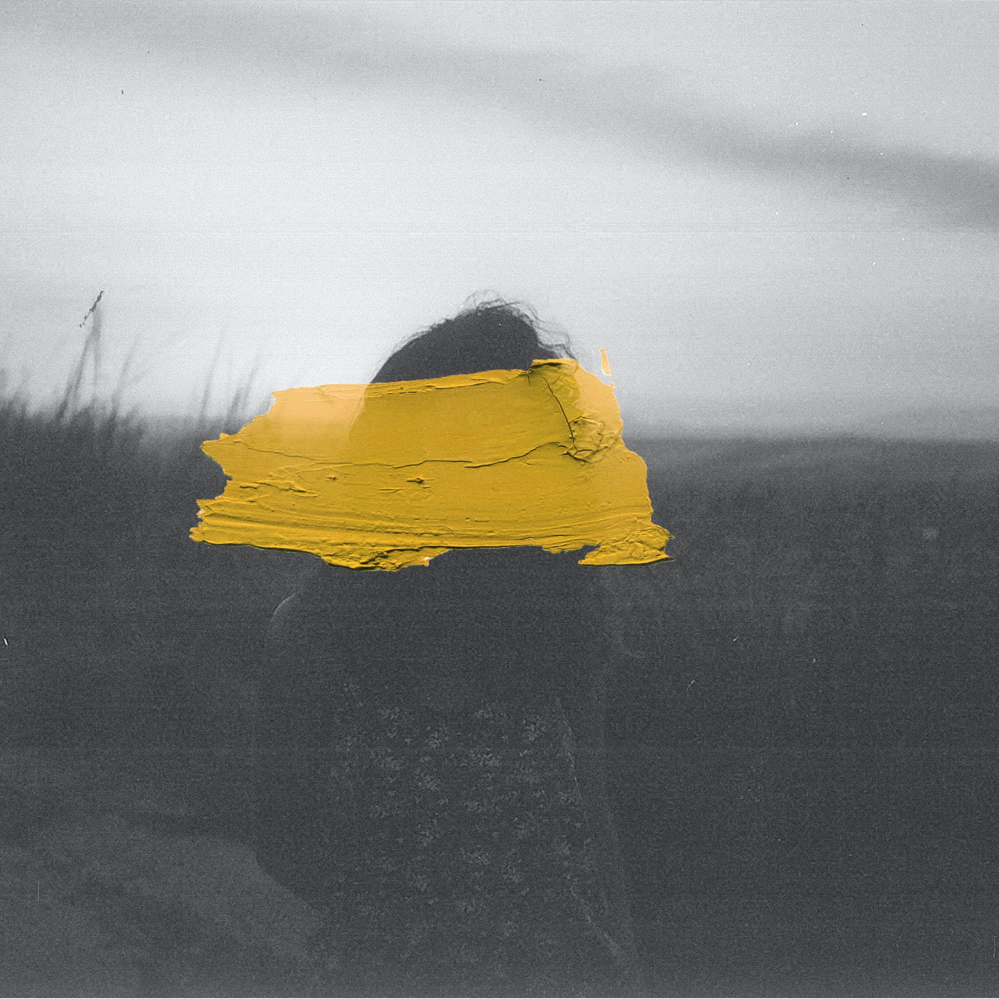

Here are examples of Y art

monochrome image of a tree, seems to be silhouetted but it may just be something else.

red as dominant as a color can be. Theres only one leader

monochrome seems to be the overall theme of Y. Thats why a pinch of yellow looks like a masterpiece
"Don't be preoccupied with a single spot. See everything in it's entirety... Effortlessly... That is what it means to truly see."
Priest, Takuan
Join us now to become Y!
Sign up to start asking Y and re-define the world!